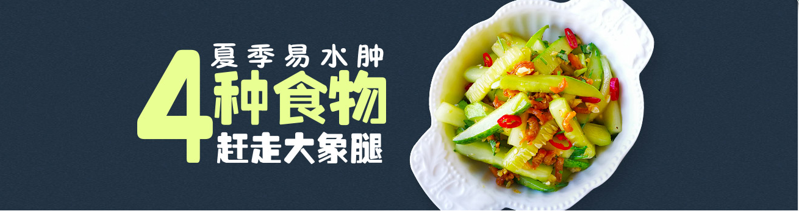

- 


明明不胖，腿却很粗！久站、久坐、跷二郎腿、腿部受凉都会影响下半身血液循环，
造成腿部浮肿。浮肿腿的一个明显特征就是早上的时候明明腿还很正常，
到了下午或者是晚上就出现了肿大。用手快速按小腿，看肌肉的反弹速度，反弹的快就不
是水肿，速度较慢的话就说明出现了水肿现象。除了要时常活动外，饮食也可以调理。
一起来了解下消除水肿的食物吧。
冬瓜性味甘淡寒，入肺、胃、大肠、小肠，具有很好的利尿消肿、清热消渴的功效，
其中含有大量的纤维素，帮助身体排除毒素和废物，并以此达到减肥的效果。
食用花椰菜富含维生素C、维生素E、铁和钼等营养元素。维生素C有利毛细血管的健康，
有助减轻水肿症状，而维生素E则可以促进身体的新陈代谢，提高代谢率和调节荷尔蒙
的分泌，有利消除身体水肿，铁、钼元素对于除水肿也有好处。
因营养丰富，土豆又被称为“长在土里的苹果”，它含有丰富的无机盐，而无机盐中
的钾含量很高，钾不仅能帮助身体排出因食盐过多而滞留在体内的钠，还能促进身体排出
多余水分。为了有效利用土豆中的钾，在蒸、烤或煮土豆时，最好不要去皮。